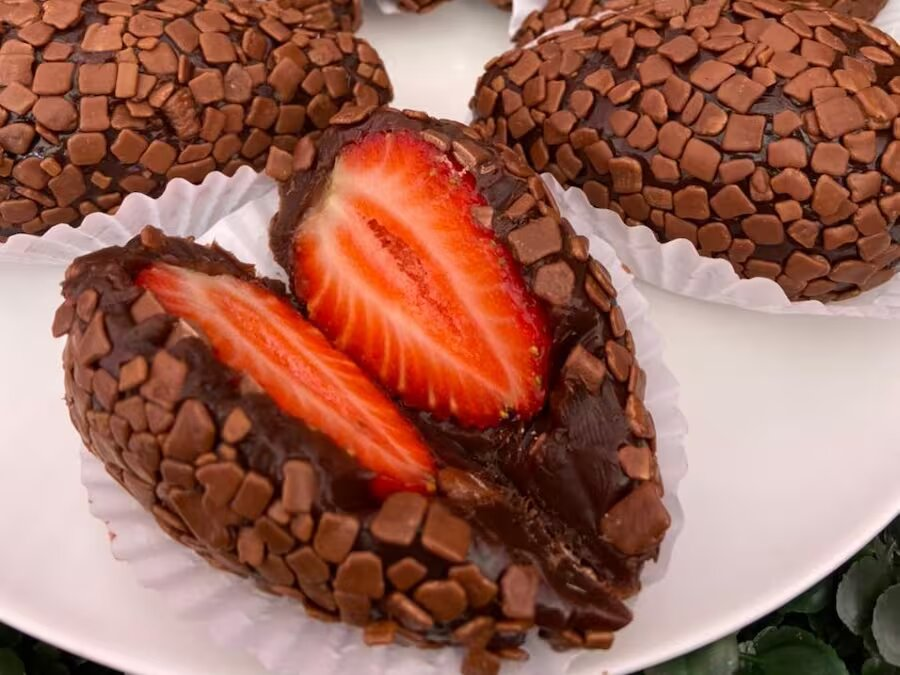

-
Arroz de Couve - Flor
- Arroz
- Couve-FLor
- Cebola Media
- Azeite
Deixe a couve-flor picada.Adicione os ingredientes e refogue bem.Adicione sal,tampe a panela e deixe conzinhar.
-
Bolo de Cáfe
- Farinha de Trigo
- Café coado
- Açúcar
- Chocolate em Pó
- Ovos
Bata o açúcar,as gemas e o café.Adicione farinha e chocolate e mexa bem.Bata as claras e junte à mistura.
-
Coxinha de Morango
- Leite Condesado
- Chocolate em Pó
- Manteiga
- Morango
- Chocolate Granulado
Junte o leite Condensado,chocolate em pó e manteiga.Aqueça no fogo baixo.Envolva os morangos e passe no granulado.